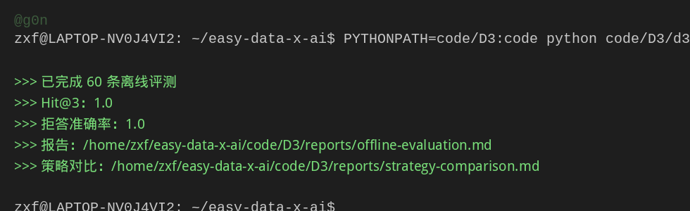

TASK 1 · 学习笔记
环境准备与课前导读
完成环境自检与离线评测，并读完公共基础三篇（F0/F1/F2），建立「数据视角看 Agent」的认知框架。
- 计划
- 2 天
- 截止
- 09-17 03:00
- 状态
- 已完成
- 更新
- 2026.09.15
00
任务要求
完成 Shell、Python、模型 API、Git 环境自检并提交结果；课前导读与公共基础。
F0：课前闲聊F1：大模型的本质与边界F2：AI Agent 的完整图景
01
⏰ 截止时间：2026-09-17 03:00（✅ 2026-09-15 完成） 📖 阅读内容：F0 课前闲聊 + F1《大模型的本质与边界》+ F2《AI Agent 完整图景》
01 实践成果
环境搭建（2026-09-14）
| 项目 | 结果 |
|---|---|
| 课程仓库 | ✅ 克隆 easy-data-x-ai |
| Python 虚拟环境 | ✅ Python 3.12.3（独立 .venv，不动系统） |
| 课程依赖 | ✅ langchain / openai / langgraph / ragas 等安装完成 |
| 离线评测 | ✅ 60 条全部通过，Hit@3=1.0，拒答准确率=1.0 |
实测截图：

评测报告关键指标： Hit@1=0.92，Hit@3=1.0，MRR=0.9533，上下文召回率=1.0，拒答准确率=1.0（详见 code/D3/reports/offline-evaluation.md）
平台是 WSL 环境；克隆时 GitHub 直连不稳，改用 gh 镜像通道解决。
如何复现：
git clone https://github.com/datawhalechina/easy-data-x-ai.git
cd easy-data-x-ai
python3 -m venv .venv && source .venv/bin/activate
pip install -r code/requirements-test.txt
PYTHONPATH=code/D3:code python code/D3/d3_5_evaluate.py02 学习心得（张博本人理解）
这次导读我最大的感触是：用系统思维来看 Agent、RAG、Memory、Skill、MCP 这些东西。
一开始看上去它们好像是各种不同的名词和功能，各管一摊子事。但读完后发现，它们的核心都是数据——只是数据在 Agent 生命周期的不同环节被不同方式使用：
- RAG：把外部知识变成模型能用的上下文
- Memory：把历史交互沉淀成可检索的记忆
- Skill：把可复用的经验/流程标准化
- MCP：把外部工具和数据的接口统一起来
如果用一句话概括，我得到的一个认知是：
Agent 的能力 = 模型能力 × 数据质量 + 流程编排
这个公式帮我理解了：为什么同样一个模型（比如同样的 LLM API），在不同场景下表现差异巨大——因为数据质量（喂进去什么）和流程编排（怎么组织多步调用）才是拉开差距的地方。反过来说，想让 Agent 能力最大化，重点不是换更强的模型，而是把数据管好、把流程设计好。
另外 F1 里对大模型"本质与边界"的梳理（幻觉、知识截止、上下文窗口等）也让我对"模型不是万能的"有了更具体的认识——知道边界在哪，才知道数据层和流程层该补什么。
📖 引用来源
- 课程仓库：https://github.com/datawhalechina/easy-data-x-ai
- 课程在线阅读：https://datawhalechina.github.io/easy-data-x-ai